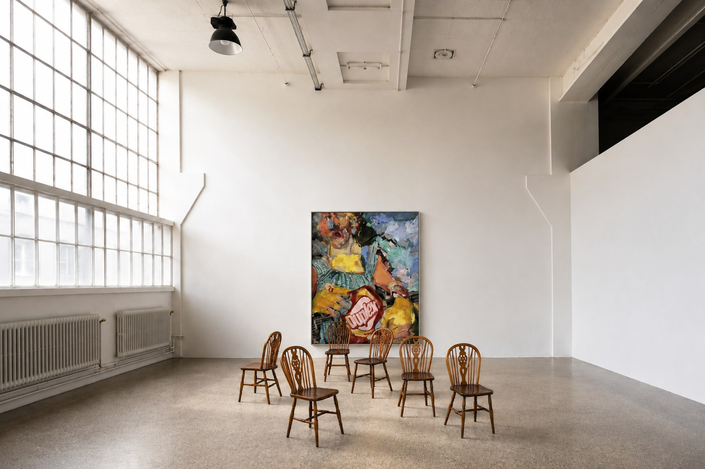

Hoss began in Buenos Aires, founded by Tomás Schlossberg, and later took root in Paris. The studio now works internationally, across borders and disciplines. Each project is conceived as a single gesture — architecture, interiors and art, considered together from the very first idea.
Tomás Schlossberg
Tomás Schlossberg studied architecture at the Universidad de Buenos Aires and later moved to Paris, where he continued his training and worked at Laplace before founding Hoss.
HOSS brings together architecture, design and art to create spaces with a strong sense of identity and purpose. Each project is developed as a singular response to its context, its architecture and the people it is designed for, balancing function, materiality and character.
From the first idea to its realization, HOSS oversees the entire process, translating concepts into carefully considered spaces through a continuous attention to proportion, materials and detail.